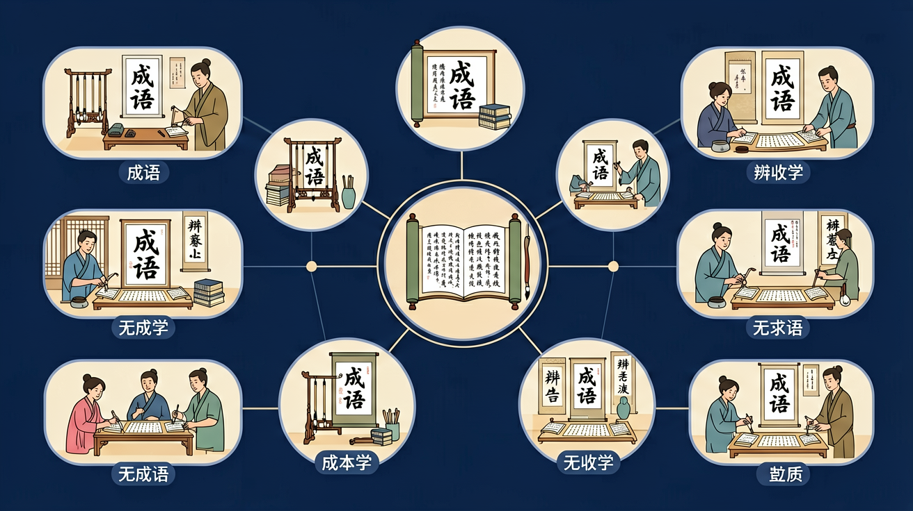

语言积累、梳理与探究任务群旨在培养学生丰富语言积累、梳理语言现象的习惯，在观察、探索语言文字现象的过程中发现语言文字运用规律。

🎯 能说出20组高频易混成语的语义差异
🎯 能判断成语适用对象/感情色彩/语法功能的错误
🎯 能分析语境中成语替换的合理性
❓ 为什么‘望其项背’和‘望尘莫及’都有‘追不上’的意思，考试却总选错？
❓ ‘美轮美奂’到底能不能形容风景？老师总说我用错对象！
❓ 看到‘首当其冲’就选‘第一个冲上去’，为什么每次都掉坑？
学完这一课，这些问题你都能自信地回答。
下列哪组成语含义实际相反？
‘这位科学家（ ），在多个领域取得突破’，横线处不能用：
成语辨析与运用是高中语文的重要内容。语言积累、梳理与探究任务群旨在培养学生丰富语言积累、梳理语言现象的习惯，在观察、探索语言文字现象的过程中发现语言文字运用规律。
通过梳理和整合，将积累的语言材料和学习的语文知识结构化，将言语活动经验逐渐转化为具体的学习方法和策略，并能在语言实践中自觉地运用。
迁移任务：找一道与「成语辨析与运用」相关的练习题或生活情境，用本课方法完整解答一遍。
成语考查望文生义、对象误用、褒贬色彩、谦敬错位、语义重复等。复习要掌握常用易错成语的准确含义与适用对象，放入句子检验。
先准确释义，再看用于人还是物、褒还是贬，最后看与上下文是否重复矛盾。
常见误区：常见误区是只知大概意思，不管适用对象。
成语使用错误常见原因是？
拆解成语中的关键字（如‘项背’指脖子和后背）
追溯典故本源（如‘七月流火’出自《诗经》指天气转凉）
对比近义成语的侧重点（‘耳濡目染’强调无形影响 vs ‘潜移默化’强调结果）
观察真题中高频设错点（80%错误集中在对象误用和望文生义）
用成语新解时政热点（如用‘竭泽而渔’批评过度开发）
复制提示词到 AI 学伴，生成「成语辨析与运用」的思维导图或赏析提纲；也可以上传你手绘的示意图，请 AI 学伴点评。
复制后可粘贴到 AI 学伴继续对话。
下列哪个成语最适合用来形容一个人因专注工作而忘记吃饭？
选择一篇你写过的作文，尝试在其中加入合适的成语，观察表达效果的变化。
先独立作答，再点选项查看对错与错因。
下列句子中，哪个成语使用最恰当？
下列哪个成语与'废寝忘食'意思最接近？
下列哪个成语不适合用来形容学习勤奋？
他为了准备考试，____地复习，终于取得了好成绩。
答案：废寝忘食
'废寝忘食'表示因专注而忘记饮食，适合形容勤奋学习。
小明在学习过程中____，最终掌握了所有知识点。
答案：孜孜不倦
'孜孜不倦'表示勤奋不懈，适合形容学习过程。
✅ 正确义为‘最先受到冲击’
💡 将‘冲’误解为动词
✅ 仅用于形容书籍多
💡 字面联想错误
口诀：对象色彩和语法，望文生义最可怕
类比：成语像中药，用错部位就变毒药——‘炙手可热’只能形容权势不能形容商品
（高考真题）‘脱贫攻坚要（ ），不能搞花拳绣腿’，最恰当的是：
为‘直播带货乱象’选警示成语：
改写病句：‘群众对虚假广告深恶痛绝，这种现象蔚然成风’
点击节点跳转到对应章节；可切换布局。